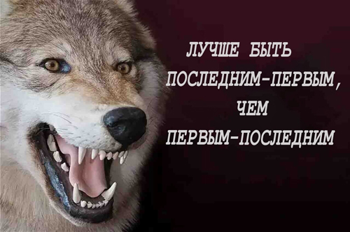
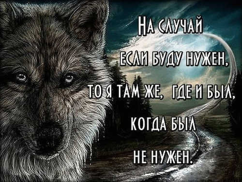
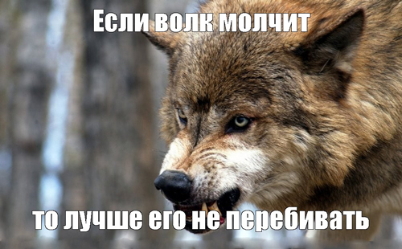
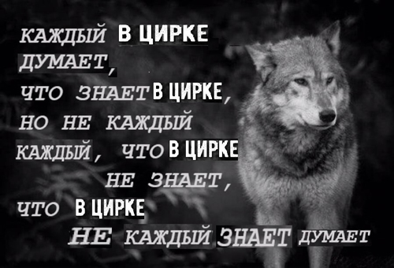
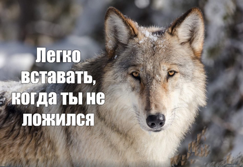

Лучше быть последним — первым, чем первым — последним.
На случай, если буду нужен, то я там же, где и был, когда был не нужен.
Если волк молчит то лучше его не перебивай.
Каждый в цирке думает, что знает в цирке, но не каждый, что в цирке знает, что в цирке не каждый знает думает.
Легко вставать, когда ты не ложился.